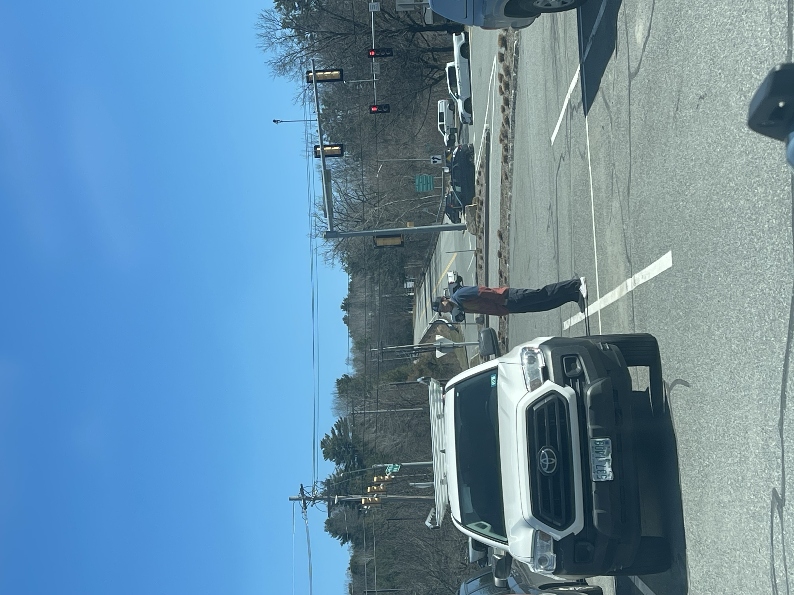

Entrepreneurship
Things I've built and run, not just pitched.
Pest OS
Live · Paying customersThe full customer lifecycle for pest & wildlife operators — from the missed call to the booked job.
Most pest and wildlife control businesses are one or two people. They miss calls constantly while on job sites, and a missed call is a missed booking. Pest OS sits behind the operator's existing number. The owner still gets first crack at every call. If nobody answers after five rings, Pest OS picks up, triages the pest type and urgency, books the job to the operator's calendar, and emails a call summary.

My co-founder Jacob Posner (Dartmouth '27) leads the technical architecture. I lead business development, outreach, operations, and sales. We met in Rome while studying abroad and incorporated when we got back to campus.
In spring 2026, we won the Magnuson Founder Grant from Dartmouth's Center for Entrepreneurship — a competitive grant awarded to student ventures demonstrating real traction and a credible path to scale. The grant funds our next phase of customer acquisition and product development.
How a call flows through Pest OS
First customer, first month
Our first customer, a two-operator wildlife company in New Hampshire, went live April 2, 2026.
97 calls, broken down
One call was mishandled by the AI. We caught it, told the operator, fixed the system, and repaired the relationship. When you sell software that answers someone's phone, that accountability is the product.
What I learned
We built before we'd validated enough. Our first customer came through proximity, not outreach, which delayed testing whether cold acquisition converts. It mostly doesn't in this industry: roughly 1,000 cold emails generated interest but no signed customers. Field sales work better — I've pitched pest control companies in parking lots in New Hampshire, and that taught me more about go-to-market than any of the email tooling did.
- Role
- Co-founder, CEO
- Since
- January 2026
- ARR
- $6K
- Market
- $13.4B U.S. industry, 16,565 firms, 81% with one or two locations
- Pricing
- $500 setup + $500/mo
- Burn
- ~$100/mo. First customer covers it 5x
GHC Partners
Venture FundLP outreach infrastructure, proprietary databases, and macro research for an emerging venture fund.
As a venture analyst at GHC Partners, I built the fund's LP outreach infrastructure from scratch. Python scripts parsed and structured contact data from source PDFs. The Anthropic API personalized email drafts at scale. A Gmail integration delivered daily drafts to the managing partner's inbox. An Excel CRM, iterated through eight-plus versions, tracked contact status, outreach stage, and responses.
The system was designed to never auto-send. Every email required explicit partner approval before going out. The automation removed drafting time, not judgment.
LP outreach pipeline
Beyond outreach
I built three databases tracking PRIs, emerging manager programs, and donor-advised funds, covering 100+ potential LPs across the US and Northern Europe. I assisted on the fund's SBIC application, and my macroeconomic research has been included three times in LP reports. The market research itself lives on the Analysis page.
- Role
- VC Analyst
- Since
- May 2025
- Scale
- ~700 LP contacts
- Databases
- 3 proprietary (PRIs, emerging managers, DAFs)
- Stack
- Python, Anthropic API, Gmail MCP, Excel CRM
- Constraint
- Human approval on every send
Earlier builds
Arboro (TuckLAB, spring 2025). B2C reforestation platform. I led finance and business strategy. First place in the 6 Minute Pitch, Value Proposition, and Product Development challenges; third overall out of 16 teams.
The Gratefull Bed Company (2023–2025). I bought an ownership share of a small bed company specifically to learn small business management with real money on the line, and increased profitability each year I held it.
- Pattern
- Learn by owning the outcome
How I work
Build first, theorize second
I'd rather have a live product with one customer than a pitch deck with ten slides. Real feedback from real users is worth more than any amount of market sizing.
Own the outcome
I bought into a bed company to learn operations. I pitched in parking lots to learn sales. I don't study things from the outside when I can learn them from the inside.
Systems over heroics
Every project I've built has a repeatable system at its core — an outreach pipeline, a call flow, a CRM. The goal is always to make the process work without me in the loop.
Accountability is the product
When our AI mishandled a call, we told the operator before they found out. When I found a legal issue in an outreach campaign, I stopped it. Trust compounds.